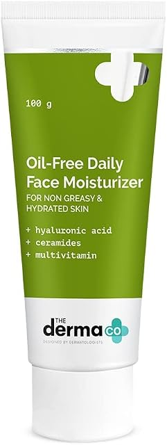

Skincare from the brands our customers ask for most — Minimalist, Plum, The Derma Co, Cetaphil, Dr. Sheth’s, Mamaearth and Dot & Key — organised by what your skin actually needs: acne, oily skin or dry skin.
Shop by concernAcne, oily skin or dry skin — start with your concern, then build a cleanse, treat, moisturise and protect routine.
Plant-led formulas Gentle, simple formulas For every skin type Four-step routines
What does your skin need today?
Tap a concern — the products below filter straight away.
Shop by Concern · Now in Store
Bestsellers, matched to your skin
Start with what your skin is actually dealing with. These are the bestsellers we stock at NS Enterprises — from Minimalist, Plum, The Derma Co, Cetaphil, Dr. Sheth’s, Mamaearth and Dot & Key — grouped by the job they do best, so you can walk in knowing exactly what to ask for.
Seven brands, one rule: every product here is a proven bestseller with its hero ingredient and strength on the label — Salicylic Acid, Niacinamide, Ceramides, Vitamin C — so you know exactly what you are putting on your skin and why. Tap any product’s WhatsApp button to check if it is in stock before you visit. Just added: three new The Derma Co moisturizers are now in store — Oil-Free Daily Face Moisturizer (100 g), Pore Minimizing Daily Face Moisturizer (50 g) and 1% Salicylic Acid Oil-Free Moisturizer (50 g). They are shown first in the green “Just Added” box below. Also new: the complete sunscreen ranges from Minimalist, Plum and Dot & Key are now in store — every SPF from each brand, from matte gels for oily skin to tinted, mineral and sports sunscreens. Find them all under the Sunscreens category below.
Just added — The Derma Co moisturizers
These three moisturizers are the latest additions to the shelf. They are also listed in the full catalogue below — tap WhatsApp on any card to check stock.
New in store

The Derma CoMoisturiseNew
Oil-Free Daily Face Moisturizer
A lightweight, non-greasy daily moisturizer for hydrated skin without the shine — hyaluronic acid and ceramides keep skin plump and supple, while multivitamins nourish with no greasy residue.
Made for open, clogged pores and dehydrated skin — 3% niacinamide and p-REFINYL® help minimise enlarged pores and control excess oil, while 3% PHA gently smooths skin texture.
The moisturizer for active acne — 1% salicylic acid clears excess oil and unclogs pores to fight breakouts, while oat extract soothes and hydrates without greasy residue, for a matte finish.
Plum’s best-known face wash for oily, acne-prone skin. Green tea helps keep excess oil and clogged pores in check while the soft gel cleans without stripping.
A dermatologist-designed gel wash for active acne — salicylic acid works inside pores while witch hazel and willow bark help calm oily, breakout-prone skin.
A lightweight, non-greasy daily moisturizer for hydrated skin without the shine — hyaluronic acid and ceramides keep skin plump and supple, while multivitamins nourish with no greasy residue.
Made for open, clogged pores and dehydrated skin — 3% niacinamide and p-REFINYL® help minimise enlarged pores and control excess oil, while 3% PHA gently smooths skin texture.
The moisturizer for active acne — 1% salicylic acid clears excess oil and unclogs pores to fight breakouts, while oat extract soothes and hydrates without greasy residue, for a matte finish.
A rich, dermatologist-trusted cream for dry to normal, sensitive skin — deep moisture that helps restore the skin barrier and lasts for up to 48 hours.
Dry skinSensitiveBarrier care
Use: AM & PM, generously at night · Key ingredients: Sweet Almond Oil + Vitamins E, B3 & B5
A sunscreen made for Indian skin that does more than protect — ceramides support the barrier while Vitamin C works on brightness, in a finish all skin types can wear.
All skin typesDaily SPFBrightening
Use: AM, last step · Key actives: Ceramide Complex 1% + Vitamin C Complex 2% + Hyaluronic Acid 1%
A cooling gel moisturizer that hydrates without heaviness — watermelon and hyaluronic acid refresh dull, tired skin, while niacinamide helps control excess oil.
Minimalist’s original sunscreen — a moisturiser-meets-sunscreen with Vitamins B, E & F. Light texture that disappears into a natural, moisturised, non-shiny finish with no white cast.
All skin typesDaily SPFNo white cast
Use: AM, last step · Protection: SPF 50 PA++++ · Key actives: Niacinamide + Vitamins B5, E & F
Minimalist’s highest-protection sunscreen, made for sensitive and acne-prone skin — pregnancy-safe, non-irritant and no white cast, with potent antioxidants alongside advanced UV filters.
SensitiveAcne-pronePregnancy-safe
Use: AM, last step · Protection: SPF 60 PA++++ · Key actives: Hyaluronic Acid + Vitamin E
An ultra-light, completely invisible gel sunscreen with a matte finish — water and sweat resistant, so it is the one oily skin reaches for under makeup and on humid days.
Sun protection for the rest of you — a nourishing body lotion with broad-spectrum SPF 30 for arms, legs and neck, so exposed skin is covered, not just your face.
Body SPFAll skin typesDaily protection
Use: AM, on exposed body skin · Protection: SPF 30 PA+++ · Key ingredients: Vitamin E + Glycerin + Green Tea Extract
Plum’s flagship hybrid sunscreen — broad-spectrum SPF 50 PA++++ with niacinamide and rice water for 3x tan reduction and brighter-looking skin, with no white cast.
All skin typesTan reductionBrightening
Use: AM, last step · Protection: SPF 50 PA++++ · Key actives: Niacinamide 2% + Rice Water
The Plum sunscreen made for oily, acne-prone skin — a super-matte gel with instant oil reduction and 120 minutes of water resistance, so shine stays down all day.
Oily skinMatte gelOil control
Use: AM, last step · Protection: SPF 50 PA++++ · Key actives: Green Tea + Zinc
Plum’s classic everyday sunscreen gel for oily and combination skin — feather-light, non-comedogenic and quick to absorb, with green tea antioxidants for daily city wear.
Oily skinCombinationLightweight gel
Use: AM, last step · Protection: SPF 35 PA+++ · Key ingredient: Green Tea
An aqua-light sunscreen that soothes as it protects — cica calms the look of redness while hyaluronic acid keeps combination and sensitive skin hydrated, never heavy.
Chamomile & White Tea Sheer Matte Day Cream SPF 50
A day cream and sunscreen in one — sheer matte finish with chamomile and white tea antioxidants, made for normal to combination skin that wants one simple morning step.
CombinationMatte finishDay cream + SPF
Use: AM, last step · Protection: SPF 50 PA+++ · Key ingredients: Chamomile + White Tea
Plum’s age-care day cream with SPF — rich defence for mature, drier skin that wants moisture, firmness support and sun protection in a single morning cream.
Plum’s gentlest sunscreen — 100% mineral filters only, with oat and ceramides to protect and strengthen the barrier. The pick for sensitive, reactive and pregnancy skin.
An aqua-gel sunscreen with an instant cooling feel — watermelon and hyaluronic acid keep oily and combination skin hydrated and shine-free, even on humid days.
A light gel-cream sunscreen for oily, acne-prone and sensitive skin — cica calms while niacinamide helps with marks, in an oil-free, fragrance-free matte finish.
A water-cream sunscreen for dry, dehydrated and sensitive skin — blueberry with 5 ceramides and hyaluronic acid for long-lasting moisture and barrier support, non-greasy.
Sunscreen with sheer tinted coverage — evens out tone while it protects, with a dewy, natural finish and no white cast. Ask us on WhatsApp about shades in store.
A cushiony gel sunscreen with a bouncy, hydrated finish — ectoin and multi-layer hyaluronic acid with niacinamide, for skin that wants bounce, not grease.
Try a shorter search (for example “SPF 50” or “niacinamide”), or clear the brand, category and concern filters to see the full shelf again.
Check stock before you visit
Every product above has its own WhatsApp button — or message us here and tell us what you are looking for. We will confirm if it is available in store.
Not sure which group is yours? Answer four quick questions in the Routine Builder below — it will pick from the Minimalist products for you.
Shop by Category
Shopping by step instead?
Same in-store products, sorted by where they sit in your routine — cleansers, serums, moisturizers, sunscreens and overnight care. Every card keeps its photo and its WhatsApp availability button.
These category tabs work together with the search, brand and concern filters above — pick a category here and the list below narrows to match everything you have selected.
No products in this category yet.
Skincare Routine Builder
Answer 4 questions. Get your AM + PM routine.
Built like we would in store: first your skin type, then your main concern, how reactive your skin is, and how much time you want to spend. Your routine is generated only from the Minimalist products on our shelves above.
Your personal routine will appear here. Start with question 1 — pick the skin type that sounds most like you on a normal day.
This builder gives general skincare guidance from our showcase range, not medical advice. For persistent, painful or cystic acne, please see a dermatologist — and patch-test any new active behind the ear for 2–3 days first.
The Ritual
Four steps, five minutes
Good routines are the ones you actually keep. Ours fits on either side of the day — mornings end with protection, evenings with repair.
Inside the Formulas
Ingredients that pull their weight
No twenty-ingredient mysteries. These are the hard-working actives behind the Minimalist products in store.
Vitamin C
The brightness ingredient — supports a more even tone and defends skin against dull, tired-looking days.
Found in · Vitamin C 10% Serum
Hyaluronic Acid + PGA
Water-binding hydrators that pull moisture into thirsty skin, so it feels softer and less tight.
Found in · Hyaluronic + PGA 2% Serum
Ceramides
The mortar of your skin barrier — replenishing them helps skin hold moisture and stay calm under stress.
Found in · Ceramides 0.3% Moisturizer
Sepicalm + Oat
A calming pairing for skin that flushes or stings easily — soothes the look of redness while hydrating lightly.
Found in · Sepicalm 3% + Oat Moisturizer
Salicylic Acid (BHA)
The pore-clearing active — works inside pores to dissolve excess oil and the build-up behind breakouts and blackheads.
Found in · Salicylic Acid 2% Serum & Cleanser
Niacinamide
The all-rounder for oily, acne-prone skin — helps balance sebum, calm blemishes and fade post-acne marks over time.
Found in · Niacinamide 10% Serum
Simple shelves. Honest labels. Skin that thanks you.
Browse products by concern or by category, compare ingredients side by side, and use the Routine Builder to match a routine to your skin.
With three things matched to your concern: a cleanser, a moisturizer, and sunscreen in the morning. For acne or oily skin that is usually the Salicylic Acid + LHA 2% Cleanser with the Vitamin B5 10% Moisturizer; for dry skin, the Hyaluronic + PGA 2% Serum under the Ceramides 0.3% Moisturizer. Finish mornings with the Light Fluid SPF 50, and add a treatment serum after a few weeks, once the basics feel like habit.
How long before I see a difference?
Hydration improves within days. Tone and texture take longer — skin renews roughly every four weeks, so give any new routine six to eight consistent weeks before judging it.
Can I use Minimalist Vitamin C 10% with the Ceramides moisturizer?
Yes — they layer well. Apply Vitamin C 10% to clean, dry skin in the morning, give it a minute to settle, then seal with the Ceramides 0.3% + Madecassoside Moisturizer. Finish with the Light Fluid SPF 50.
Are the products suitable for sensitive skin?
If your skin is reactive, start with the gentlest options in store — the Sepicalm 3% + Oat Moisturizer is made to calm redness — introduce one product at a time, and patch-test any new active behind the ear for a few days first.
Can I use Minimalist Salicylic Acid and Niacinamide together?
Yes — it's one of the most useful pairings for acne and oily skin. Use Niacinamide 10% in the morning, and keep Salicylic Acid 2% for the evening, 2–3 nights a week to start. Don't layer both strong actives in the same step while your skin is still adjusting, and always wear SPF in the day.
Which sunscreen should I pick — Minimalist, Plum or Dot & Key?
Match the finish to your skin. Oily or acne-prone: Minimalist Light Fluid SPF 50 or Invisible Gel SPF 40, Plum Green Tea & Zinc Super-Matte SPF 50, or Dot & Key Cica Calming Mattifying SPF 50. Dry skin: Minimalist Multi-Vitamin SPF 50, Plum Squalane & Vitamin E Dewy-Bright SPF 50, or Dot & Key Blueberry Barrier Repair SPF 50. Sensitive skin: Minimalist SPF 60 or Plum Oat & Ceramide 100% Mineral SPF 50. For reapplying over makeup, take the Dot & Key Strawberry Dew Sunscreen Stick; for swimming and sports, the Dot & Key Lime Rush. Use the Sunscreens tab under Shop by Category to see all of them side by side, and tap WhatsApp on any card to check stock.
I'm dry but I still get breakouts. Which Minimalist products fit me?
Start gentle: the Sepicalm 3% + Oat Moisturizer for calm hydration, Hyaluronic + PGA 2% on damp skin, and Salicylic Acid only as a short, targeted PM step — not a daily cleanser. The Routine Builder above will balance this combination for you.